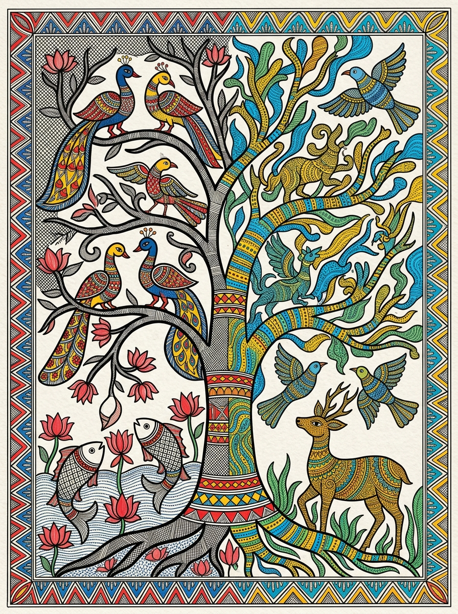

Artwork Dossier: Vriksha-Chaitanya
Title: Vriksha-Chaitanya (Consciousness of the Cosmic Tree)
Traditions Fused: Madhubani (Mithila) × Gond (Pardhan Adivasi)
Regional Origin: Northern Bihar & Eastern Madhya Pradesh
Thematic Anchor: Ecological animism and the sacred continuum between water, earth, and sky.
Interactive Motif Explorer
Select an element to analyze its derivation and symbolic synthesis:
Natural Pigment & Color Strategy
Harmonizing the ritual primaries of Mithila with the luminous animist palette of Gond art:
Comparative Stylistic Matrix
Demonstrating how characteristics from each source tradition are rigorously preserved and unified:
| Artistic Dimension | Madhubani (Mithila, Bihar) | Gond (Pardhan, MP) | Synthesized Outcome (Vriksha-Chaitanya) |
|---|---|---|---|
| Primary Linework | Crisp double parallel black outlines filled with fine cross-hatching (*kachni*). | Fluid, sinuous single contour lines holding internal repetitive dot/dash textures. | Double-line contours delineate primary compositional borders; sinuous contours guide the upper canopy. |
| Internal Texturing | Linear hatching, tiny parallel tick marks, solid flat fills (*bharni*). | Signature stippling (*tika*), rice-grain dashes (*danna*), and comb marks (*kanghi*). | Bifurcated texturing: left side features geometric *kachni* fills; right side features rhythmic Gond pointillism. |
| Spatial Organization | Strict two-dimensional planar structure; total aversion to empty space (*horror vacui*). | Buoyant, dynamic, anti-gravitational; forms float gracefully across the field. | Vertical cosmic hierarchy: grounded, densely patterned root pond rising into an airy, buoyant celestial canopy. |
| Mythological Subject | Aquatic fertility, *Matsya* (fish), *Kamala* (lotus), domestic blessings. | Forest fauna, sacred trees (*Mahua*, *Saja*), spirit animal companions. | The cosmic tree mediating between the subterranean waters of life and the celestial wild forest. |
Student Team Physical Execution Blueprint
Guidelines for the 5-member student team to translate this concept into an imperial-size physical artwork on paper:
Substrate & Primer Preparation (Student 1)
Mount 300 GSM cold-pressed handmade cotton paper (22" × 30"). Apply an aged-parchment wash using diluted yellow ochre and black tea to create a warm, organic background ground.
Cartographic Underdrawing (Student 2)
Using 2H pencil, block out the central tree axis and the 1.5-inch border. Map out the aquatic zone (lower left) and forest meadow (lower right) ensuring mathematical equilibrium.
Madhubani Inking & Double-Line Hatching (Student 3)
Using 0.3 mm pigment fineliners, ink the fish, lotus blooms, and peacocks. Draw parallel double lines and fill with dense *kachni* cross-hatching.
Gond Stippling & Dash Detailing (Student 4)
Using 000 fine detail brushes, apply Gond's optical *bindu* dots and *danna* dashes inside the deer, tree branches, and flying songbirds in concentric rhythmic tracks.
Color Infusion & Harmonization (Student 5 / All)
Apply gouache mineral pigments (vermilion, turmeric, indigo, peacock blue). Blend the central trunk where geometric bands merge into the dotted wood grain.
Professor & Viva Voce Defense Guide
Q: Why avoid the standard Warli + Kalamkari example?
Defense: Warli + Kalamkari is explicitly cited in the syllabus. While valid, student implementations frequently devolve into pasting simplistic stick figures onto chintz backgrounds. Choosing Madhubani × Gond demonstrates independent scholarly initiative and creates a genuine challenge of merging two highly complex, pattern-heavy indigenous vocabularies.
Q: How does this prove genuine synthesis?
Defense: The artwork avoids a blunt split-screen division. The trunk functions as a metamorphic axis where Madhubani's horizontal geometric bands dissolve gradually into Gond's vertical stippled grains. Furthermore, the border fuses elements from both cultures, creating an integrated visual frame.